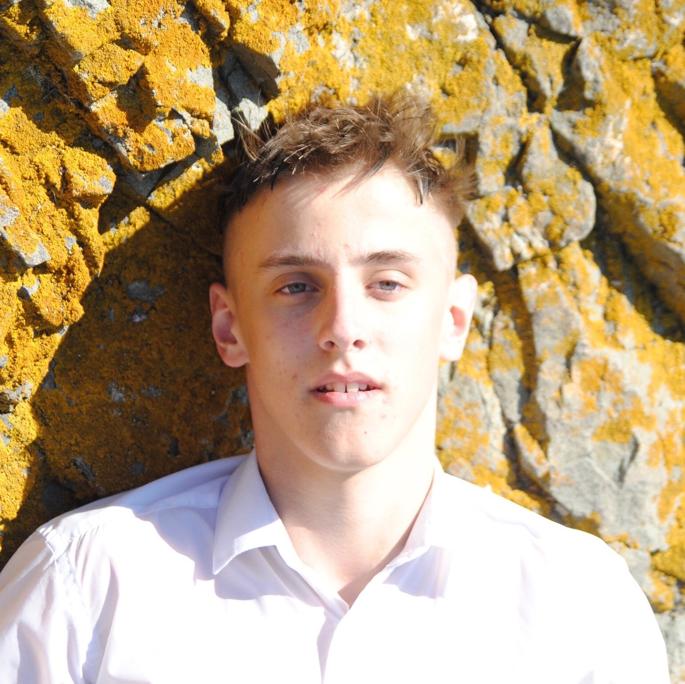

Приветствую вас на моем сайте с портфолио! Я являюсь студентом 3-го курса, обучающегося по специальности "Информационные системы" в Севастопольском торгово-экономическом техникуме. На данном сайте вы можете ознакомится с моими достижениями и немного узнать обо мне.

О себе
В данный момент я являюсь лишь студентом. В будущем я планирую развивать свои профессиональные навыки по професии на которую я в данный момент обучаюсь. В жизни я люблю путешествовать, весело проводить время с друзьями и всегда рад новым знакомствам.